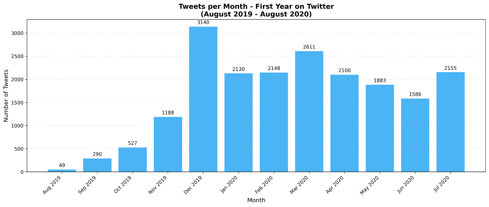
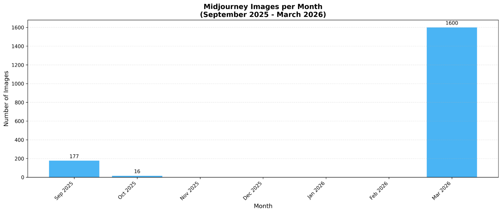
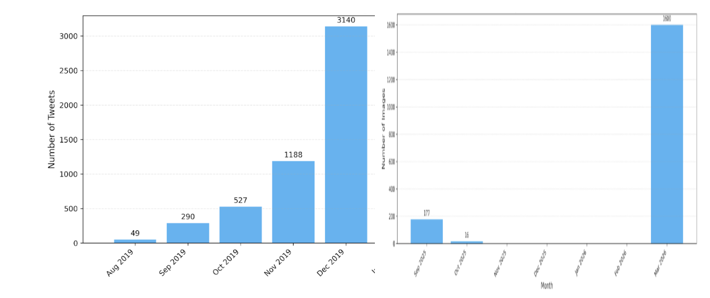

Getting It
It’s March 2026 and I finally got why everyone is so excited about GenAI.
Lifetimes ago I worked in crypto. Marketing. We had to cater to Crypto Twitter, which is how I learned about Twitter in the first place.
Later, bored and out of a job, I decided to make my own Twitter account. You could say I got into it.

Getting into Twitter. Made with Claude Code.
More recently, this time because of Twitter, I got a gig in comms — lots of helping with blog posts. Through that gig I learned about Midjourney, which we were using to try to make illustrations for the posts.
And Midjourney, a genAI image creation engine, is the reason I “got” it.
At some point — this very month, in fact — I just “got it”.

March 2026 — I “get it”. Made with Claude Code.
The same way that you can see that when I “got” Twitter I produced more in one month than ever produced before, when I “got” Midjourney I produced more in one month than ever before.

Twitter — first 5 months vs Midjourney — first 7 months. Made with Claude Code.
This pattern — where each term is bigger than the sum of all previous terms — is known as a “superincreasing sequence”. Or so AI tells me.
And, apparently, it’s what it looks like when I get something